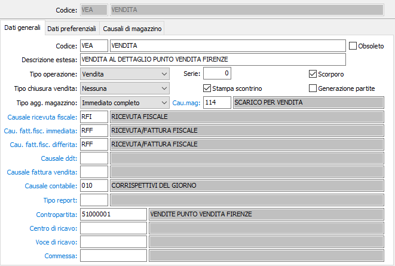
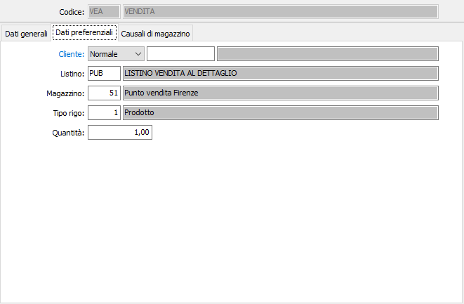
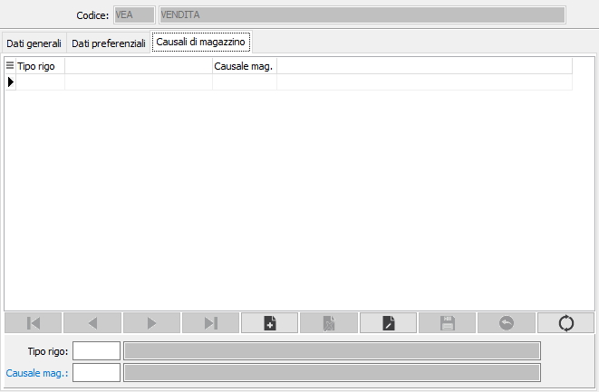

Causali di vendita
Le causali vengono utilizzate al momento dell’inserimento di un movimento di vendita e determinano il tipo di movimento.
Grazie alle diverse causali possono essere inseriti movimenti che generano ricevute fiscali/fatture fiscali, Ddt o fatture di vendita, scontrini o semplici distinte (brogliacci).
Se è presente la procedura di Gestione Magazzino, nella causale può essere inserita la relativa causale di magazzino affinché la movimentazione determini, senza ulteriori interventi da parte dell’operatore, o con fasi successive, una scrittura di prima nota di magazzino.
La finestra video di manutenzione Causali di vendita si articola su tre pagine video (linguette).
Linguetta dati generali

CODICE: codice alfanumerico di 3 caratteri, a libera scelta dell'utente, per individuare la causale attiva. Sul campo sono attive le funzioni di ricerca (F9) sulla tabella stessa.
DESCRIZIONE: campo alfanumerico di 30 caratteri per inserire la descrizione della causale attiva. Questa descrizione viene stampata sui documenti se il programma di stampa lo prevede.
OBSOLETO: flag attivabile dall’utente per inibire il possibile utilizzo dell’elemento di tabella in esame nelle successive transazioni.
DESCRIZIONE ESTESA: campo alfanumerico di 60 caratteri per inserire la descrizione estesa della causale attiva ad uso interno dell’utente. Questa descrizione non viene stampata sui documenti ma viene visualizzata nelle viste.
TIPO OPERAZIONE: il parametro è presente se attiva la gestione del documento commerciale ed è abilitato solo se non è presente nessun movimento con la causale. Il campo può assumere i valori:
Vendita, utilizzato per l’emissione del documento commerciale di vendita
Reso, utilizzato per l’emissione del documento commerciale di reso
Annullamento, utilizzato per l’emissione del documento commerciale di annullamento.
In caso di Reso o Annullamento non vengono utilizzati, dalla causale, i conti Contropartita e i conti relativi al Centro di ricavo e Voce di ricavo perché sono riproposti quelli presenti sul documento di cui si emette il reso o l’annullamento.
SERIE: campo numerico per inserire il numero di serie del documento. Ciascuna serie attiva una propria numerazione di documenti. E’ necessario, in fase di immissione del documento, per proporre automaticamente e correttamente il numero progressivo del documento acquisito dalla tabella protocolli.
SCORPORO: Definisce se il documento è soggetto a scorporo dell'Iva dal totale del documento in fase di registrazione (casella con segno di spunta). In questo caso i prezzi inseriti nel documenti saranno al lordo di Iva.
TIPO CHIUSURA VENDITA: definisce l'operazione preferenziale da proporre al termine della registrazione del movimento: nessuna operazione, stampa brogliaccio, emissione ricevuta fiscale, emissione fattura fiscale; per i tipi operazione Reso o Annullamento sono accettati solo i valori “Nessuna” e “Stampa brogliaccio”.
STAMPA SCONTRINO: indica se al termine della registrazione deve essere abilitata la stampa dello scontrino (casella con segno di spunta).
GENERAZIONE PARTITE: se spuntato attiva la generazione delle partite e del relativo movimento provvigioni se presente il modulo delle provvigioni e se sono presenti i dati relativi agli agenti; se il campo non è spuntato tutti i movimenti fatti con la causale non interesseranno le partite e di conseguenza le provvigioni.
TIPO AGGIORNAMENTO MAGAZZINO: definisce il metodo di aggiornamento del magazzino:
nessun aggiornamento: non è gestito il magazzino;
immediato completo: vengono generati i movimenti di magazzino al momento del salvataggio del movimento e vengono aggiornati i saldi dei prodotti;
differito completo: al momento del salvataggio non viene effettuata nessuna operazione sul magazzino o sui saldi, è necessario successivamente utilizzare la procedura di generazione magazzino;
immediato saldi: al momento del salvataggio vengono aggiornati solo i saldi dei prodotti; è necessario successivamente utilizzare la procedura di generazione magazzino per la creazione dei soli movimenti;
CAUSALE MAGAZZINO: codice alfanumerico di 3 caratteri, presente nella tabella Causali di magazzino, che individua i parametri del movimento di magazzino generato automaticamente dal documento attivo. L’informazione può essere omessa in caso di assenza della procedura Gestione magazzino oppure se non si intendono generare i movimenti di magazzino. Sul campo sono attive le funzioni di ricerca (F9) e manutenzione (CTRL+W) sulla tabella stessa.
CAUSALE RICEVUTA FISCALE: eventuale codice alfanumerico di 3 caratteri, presente nella tabella Causali di fatturazione, che sarà utilizzata per la generazione della ricevuta fiscale in fase di chiusura del movimento o successivamente dal programma di generazione fatture. Sul campo sono attive le funzioni di ricerca (F9) e manutenzione (CTRL+W) sulla tabella stessa.
CAUSALE FATTURA FISCALE IMMEDIATA: eventuale codice alfanumerico di 3 caratteri, presente nella tabella Causali di fatturazione, che sarà utilizzata per la generazione della fattura fiscale in fase di chiusura del movimento o successivamente dal programma di generazione fatture. Sul campo sono attive le funzioni di ricerca (F9) e manutenzione (CTRL+W) sulla tabella stessa.
CAUSALE FATTURA FISCALE DIFFERITA: eventuale codice alfanumerico di 3 caratteri, presente nella tabella Causali di fatturazione, che sarà utilizzata per la generazione della fattura fiscale dal programma di generazione fatture. Sul campo sono attive le funzioni di ricerca (F9) e manutenzione (CTRL+W) sulla tabella stessa.
CAUSALE DDT: eventuale codice alfanumerico di 3 caratteri, presente nella tabella Causali dd, che sarà utilizzata per la generazione del DDT in fase di chiusura del movimento. Sul campo sono attive le funzioni di ricerca (F9) e manutenzione (CTRL+W) sulla tabella stessa.
CAUSALE FATTURA DI VENDITA: eventuale codice alfanumerico di 3 caratteri, presente nella tabella Causali di fatturazione, che sarà utilizzata per la generazione della fattura di vendita in fase di chiusura del movimento. Sul campo sono attive le funzioni di ricerca (F9) e manutenzione (CTRL+W) sulla tabella stessa.
CAUSALE CONTABILE: codice alfanumerico di 3 caratteri, presente nella tabella Causali contabili, che definisce i parametri del movimento contabile generato dal documento attivo all’atto della contabilizzazione incassi. L’informazione può essere omessa in caso di assenza della procedura Contabilità. Sul campo sono attive le funzioni di ricerca (F9) e manutenzione (CTRL+W) sulla tabella stessa.
TIPO REPORT: consente di specificare un tipo di report specifico per i documenti che saranno emessi utilizzando questa causale. Sul campo sono attive le funzioni di ricerca (F9).
CONTO DI RICAVO: eventuale codice alfanumerico di 8 caratteri, presente nel piano dei conti, per definire il sottoconto contabile di ricavo a cui verrà accreditato il movimento attivo. Sul campo sono attive le funzioni di ricerca (F9) e manutenzione (CTRL+W) sulla tabella stessa.
CENTRO DI RICAVO: campo significativo solo in presenza del modulo Contabilità analitica opportunamente configurato. Può contenere un codice alfanumerico di 15 caratteri, per definire il centro di ricavo a cui verrà accreditato il movimento attivo. Sul campo sono attive le funzioni di ricerca (F9) e manutenzione (CTRL+W) sulla tabella stessa.
VOCE DI RICAVO: campo significativo solo in presenza del modulo Contabilità analitica opportunamente configurato. Può contenere un codice alfanumerico di 15 caratteri, per definire la voce di ricavo a cui verrà accreditato il movimento attivo. Sul campo sono attive le funzioni di ricerca (F9) e manutenzione (CTRL+W) sulla tabella stessa.
COMMESSA: campo significativo solo in presenza del modulo Contabilità analitica opportunamente configurato. Può contenere un codice alfanumerico di 15 caratteri, per definire la commessa a cui verrà accreditato il movimento attivo. Sul campo sono attive le funzioni di ricerca (F9) e manutenzione (CTRL+W) sulla tabella stessa.
Linguetta dati preferenziali
La linguetta contiene le informazioni relative ai dati da proporre in automatico in fase di movimentazione.

CLIENTE: indicare il tipo, normale, privato o tutti e/o il codice del cliente da proporre in fase di movimentazione; nel caso si inserisca il valore Tutti, in fase di movimentazione saranno selezionabili sia clienti privati che normali, altrimenti sarà selezionabile un cliente del tipo impostato sulla causale. Sul campo sono attive le funzioni di ricerca (F9) e manutenzione (CTRL+W) sulla tabella stessa.
LISTINO: codice alfanumerico, presente nella tabella listini, che individua il codice listino da proporre. Sul campo sono attive le funzioni di ricerca (F9).
MAGAZZINO: codice numerico, presente nella tabella Magazzini, che individua il magazzino aziendale da proporre. Sul campo sono attive le funzioni di ricerca (F9).
TIPO RIGO: indica il tipo rigo da proporre in fase di immissione. Sul campo sono attive le funzioni di ricerca (F9).
QUANTITÀ: indicare la quantità da proporre in fase di immissione movimenti.
Linguetta Causali di magazzino
La finestra, attiva solo nella versione OS1 Enterprise, permette di associare al singolo tipo rigo una specifica causale di magazzino, diversa dalla causale di magazzino principale.

TIPO RIGO: Indica il tipo rigo da associare alla causale. Sul campo sono attive le funzioni di ricerca (F9).
CAUSALE MAGAZZINO: codice alfanumerico di 3 caratteri, presente nella tabella Causali di magazzino, che individua i parametri del movimento di magazzino generato automaticamente dal movimento attivo per il tipo rigo richiesto. Sul campo sono attive le funzioni di ricerca (F9) e manutenzione (CTRL+W) sulla tabella stessa.